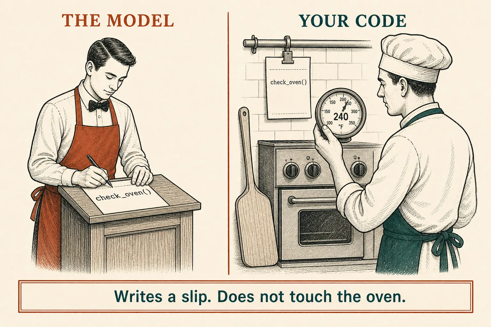
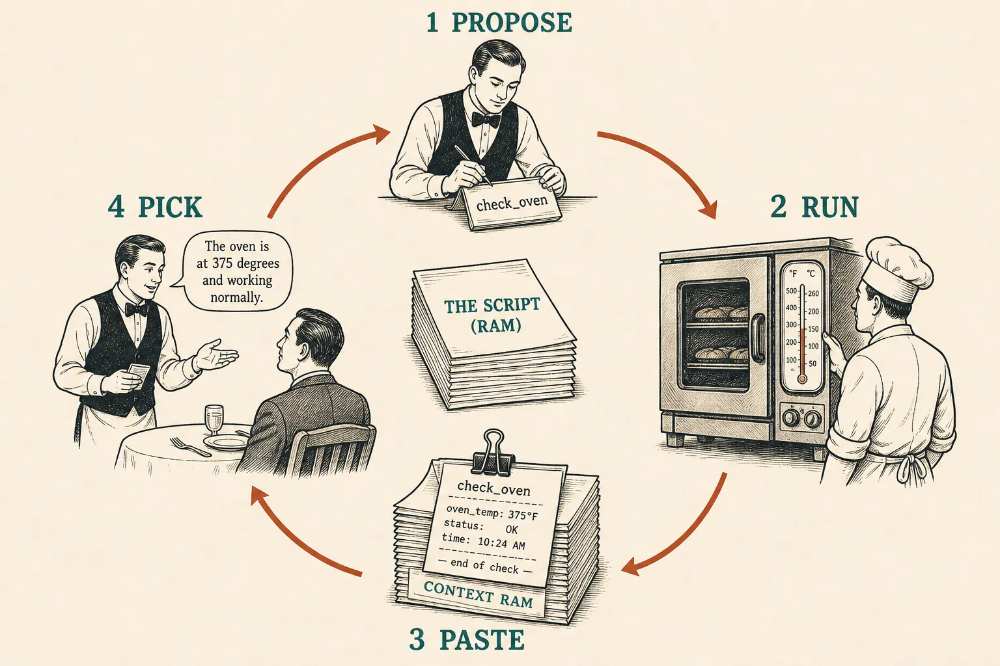
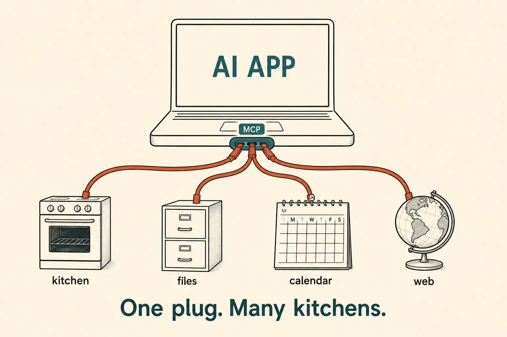

Tools
The model writes a slip
The model has a pen, not a thermometer. Tool use (also called function calling) means: it writes a kitchen ticket, your code cooks, the ticket comes back into RAM, then pack · read · pick as usual.
- 1 · ProposeThe model writes a structured slip, not English.
- 2 · RunYour code (or an MCP plug) actually does it.
- 3 · PasteThe result sits in the script, like a RAG page.
- 4 · PickSame call as lesson 0003 — now with a fresh fact.
Propose · run · paste · pick. If the script already has the answer, skip the kitchen.
No hands
OpenAI’s name for the slip is a tool call. Your app then runs the function and sends a tool call output back. Anthropic’s wording is the same idea: the model never executes anything on its own — it emits a structured request. Function calling · How tool use works

ChatGPT hides this. In an API, you are the kitchen.
The pizza ticket
Example · without a tool
What this shows. Live state — temperature, stock, “did the order go through?” — is not in the frozen cookbook. Guessing is how assistants hallucinate a number.
Example · with a tool
{ "name": "check_oven", "arguments": {} }
{ "ready": true, "temp_c": 240 }
What this shows. Two API calls, not one. First pick is the slip. You cook. Second pick is English. OpenAI lists five steps for that round trip; Claude stops with tool_use until you send a tool_result. Vendors name the JSON differently. The kitchen ticket is the same.
Skill: you are the kitchen
Ask a question. If a slip appears, the model is waiting. Run the kitchen is you. Try the sum last — some questions need no ticket.
Kitchen tickets

The loop can go around again — another slip — until the model is ready to talk. That loop is what people later call an agent. Not this lesson.
RAG found pages. Tools do work.
RAG (lesson 0004)
You find two pages, paste them, then ask. The shelf does not change the world.
Tools (this lesson)
The model asks for an action. You run it. Stock, ovens, calendars, refunds — then paste the ticket.
Both spend RAM the same way: a few tokens of fresh text, not the whole universe. Skip the kitchen when the script already has it — same as skipping the shelf.
MCP is a USB plug, not a new brain
Once you have a kitchen, every gadget wants its own adapter: files, calendar, till, web. The Model Context Protocol (MCP) is an open standard so the AI app uses one plug. Official docs compare it to USB-C. What is MCP?

The model still only writes slips. MCP is how Cursor, Claude, ChatGPT, and others attach kitchens without a custom socket each time.
Park for later: JSON-RPC, hosts vs servers, OAuth. Tonight’s load-bearing sentence is: same loop, standard plug.
Check
Primary source. Skim OpenAI’s five-step flow on Function calling (request → tool call → you execute → send output → final answer). Then Anthropic’s sentence that the model never executes on its own: How tool use works. MCP in one analogy: USB-C for AI apps.
Card: propose · run · paste · pick.